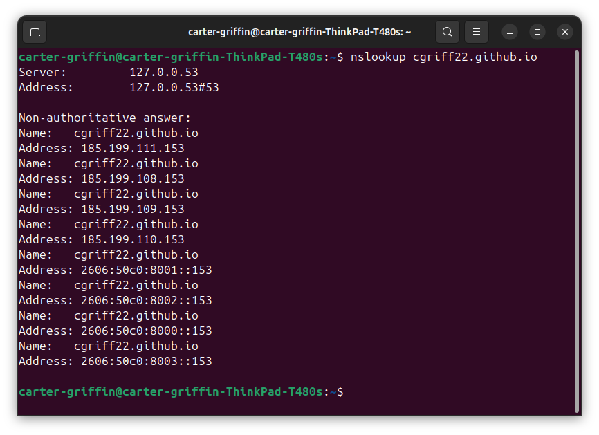
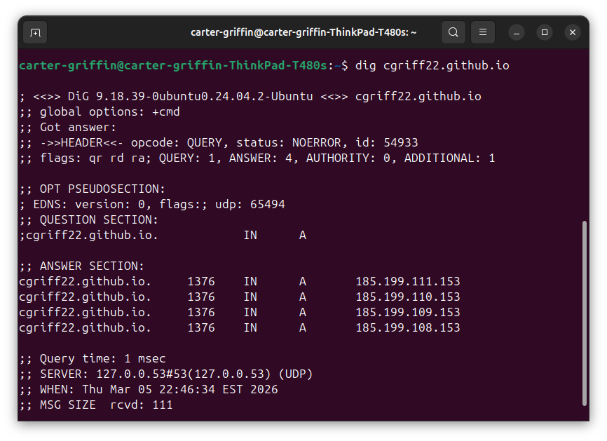
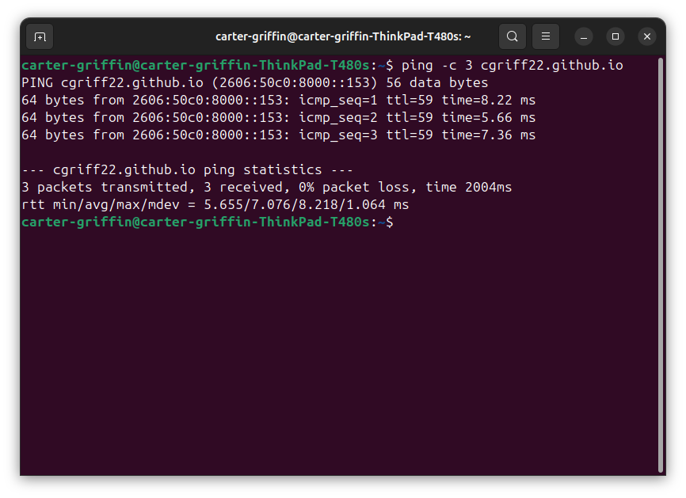
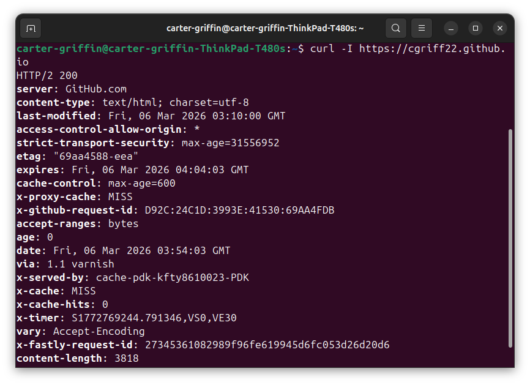

DNS resolution, IP addressing, HTTP/HTTPS protocols, and security. Demonstrated with live evidence from this deployment.
When you type our URL into your browser, a chain of lookups occurs before a single pixel renders on screen. DNS is the internet's phonebook, converting domain names to IP addresses.


GitHub Pages returns four A records: 185.199.108–111.153 for anycast load balancing. Each is a 32-bit address, giving ~4.3 billion possible addresses globally. The multiple records provide redundancy: if one IP becomes unreachable, the client falls back to another.
GitHub Pages also serves AAAA records: 2606:50c0:8000–8003::153. IPv6 uses 128-bit addresses, providing a vastly larger address space (3.4 × 10³⁸ addresses). This ensures the site is reachable on modern IPv6-only networks.

HTTP transfers data in plaintext. Anyone on the network path can read or modify it. HTTPS adds a TLS handshake that encrypts the connection, verifies the server's identity via certificates, and ensures data integrity.
| Feature | HTTP | HTTPS |
|---|---|---|
| Port | 80 | 443 |
| Encryption | None | TLS 1.2 / 1.3 |
| Certificate | Not required | Required (X.509) |
| Data Integrity | Vulnerable to MITM | Cryptographic verification |
| SEO Impact | Penalized by search engines | Ranking boost |
| Status Code Example | 200 OK, 404 Not Found | 200 OK, 301 Redirect to HTTPS |

GitHub Pages enforces HTTPS by default. Beyond that, additional security headers harden the site against common web attacks.
All HTTP requests are 301-redirected to HTTPS. HSTS header prevents protocol downgrade attacks.
Strict-Transport-Security with max-age=31536000 instructs browsers to always use HTTPS for future visits.
Set to "nosniff" to prevent browsers from MIME-sniffing responses away from the declared content type.
Set to "DENY" to prevent clickjacking by blocking the site from being loaded in iframes.